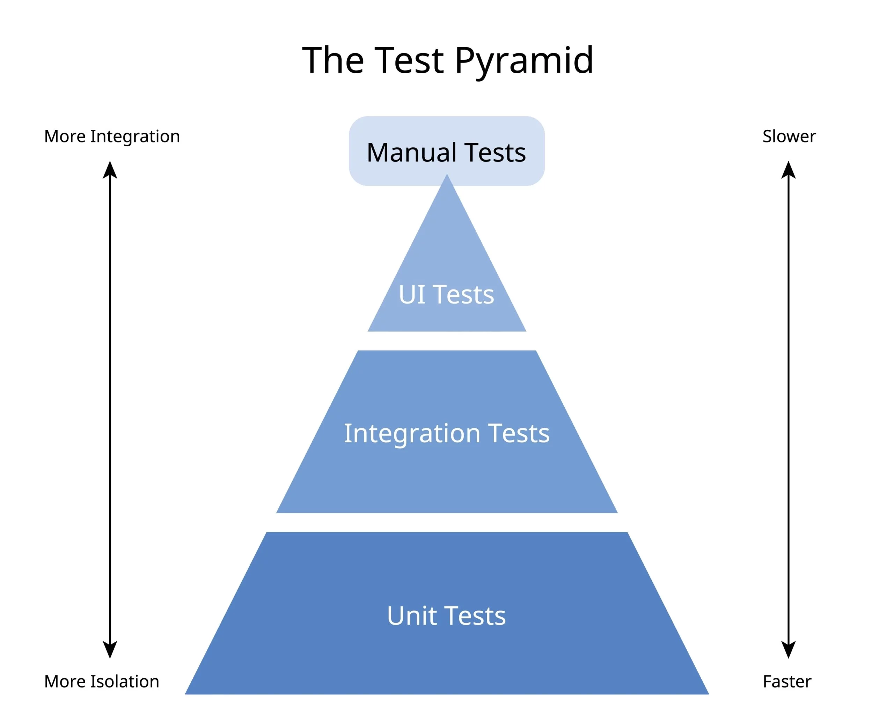

Test that! No literally, testthat…
What I hope to cover
A quick overview of what is possible when using testthat for quick pass / fail checks in
R code (e.g. in analysis or pipelines)
R Shiny applications
R packages
Show a number of examples of testing with R code that
R users can steal, adapt, and reuse
Non R users or senior managers can use as inspiration when directing their teams quality assurance (QA)
Show some starting points for you to get going with
Disclaimer: I am not going to
Show you through one specific project
- Instead, I’ll compensate by scatter-gunning some examples in the hope they provide useful inspiration
Teach you to QA
- There are many aspects of QA that require analytical skills, experience and insight to assess and make judgement calls, you can’t do all QA with just pass / fail tests
- Lots of QA is specific to the analysis you’re doing
Teach you how to build R Shiny apps or R packages
I will skim over some of the details of these to focus on the testing
Both have had multiple coffee and coding sessions in their own right - have a watch back of them
Have a look at the Analysts’ Guide R Shiny guidance
For R packages look no further than R packages by Hadley Wickham and Jennifer Bryan
If you want to get more confident using R
See our unit’s R workshop offer
OR some of the many, great free online resources for getting started with R
Remember, the best coders don’t have lots of unique knowledge, they’re just usually the most willing to search for the answers to problems themselves instead of relying on others, so get stuck in yourself and get curious!
Basic example of what we’re going to look at
Many of you who’ve written R code before will have come across something like this:
This is an example of pass / fail automated QA!
It checks for a condition and then if it meets a criteria it stops the code and tries to give a semi-informative error
I’m going to show how you can use testthat for this
- and then how you can expand on QA in Shiny and R packages
Why use automated pass / fail checks as a part of QA?
They are incredibly…
fast
reliable
easy to understand
They are the best way to start including simple automated checks into your code and data with minimal extra time or overhead to your processes
Crafting and pun credit: Mark Pearson 

Working as a part of a team?
Adding in quick automated pass fail checks will
Make it easier for everyone to run the same code reliably
Make it easier for everyone to understand what the code is supposed to be doing
Cut down the time when investigating issues
Gives assurance when reviewing each others code that you’re making the same assumptions
All because it clearly and simply documents and tests your assumptions
Working as a part of a team?
You can also use them to add in catches for steps that require manual intervention e.g.
# Check the above and flag discrepancies with master table
if(length(newPublications) != 0){
warning(
message("-----------------------"),
message("WARNING: There are new publications on the EES find stats page that are not in the master table."),
message("-----------------------"),
message("The following publications are new:"),
print(newPublications),
message(""),
message("Please update the master table in SQL using the updateMasterTable.R script in this repo."),
message(""),
)
}
if(length(newlyOnEES) != 0){
warning(
message("---------------------"),
message("WARNING: A publication marked as unpublished in the master table is now published on EES."),
message("---------------------"),
message("The following publications are newly published to EES:"),
print(newlyOnEES),
message(""),
message("Please update the rows for these publications in the master table using the updateMasterTable.R script in this repo."),
message(""),
message("---------------------")
)
}
if(length(newPublications) == 0 && length(newlyOnEES) == 0){
message("-----------------------")
message("PASS - Master table is up to date with the live service!")
message("-----------------------")
}Working alone?
If you’re like me, and ol’ Frederick here, you might end up having conversations with yourself about the code…
‘You talkin’ to me? You talkin’ to me? Well I’m the only one here. Who the duck do you think you’re talking to?’ Frederick Bickles, 2024
Adding in quick automated pass fail checks will
Make it easier for you to run the same code reliably
Make it easier for you to remember what the code is supposed to be doing
Cut down the time when investigating issues
Give assurance when writing code that it and the outputs are being QA’d consistently
Packages we’ll use
For everyone
For R Shiny developers
- shinytest2 (Side note: Are you still using the original shinytest? Stop. Migrate to shinytest2 now.)
For R package developers
Bonus level:
- GitHub Actions (not a package, nor specifically for R, but something that is genuinely excellent and you should make use of if you can)
A whole new world…
Testing R code with testthat
Testing principles
You should always think of automated tests as three phases
- GIVEN
- WHEN
- THEN
Testing principles
GIVEN
- Two numbers
WHEN
- You run a function on those numbers to add them together
THEN
- You get the sum of those two numbers
Testing principles - testthat example
Testing principles - tidied example
What if it fails?
Error : sum(x, y) not equal to 5.
1/1 mismatches
[1] 4 - 5 == -1This throws an error and stops your code - this is particularly helpful if you have certain expectations that later code relies on, and allows you to fix the problem before it compounds and causes lots of later errors.
Example data you can use yourself
# A tibble: 6 × 14
name height mass hair_color skin_color eye_color birth_year sex gender
<chr> <int> <dbl> <chr> <chr> <chr> <dbl> <chr> <chr>
1 Luke Sky… 172 77 blond fair blue 19 male mascu…
2 C-3PO 167 75 <NA> gold yellow 112 none mascu…
3 R2-D2 96 32 <NA> white, bl… red 33 none mascu…
4 Darth Va… 202 136 none white yellow 41.9 male mascu…
5 Leia Org… 150 49 brown light brown 19 fema… femin…
6 Owen Lars 178 120 brown, gr… light blue 52 male mascu…
# ℹ 5 more variables: homeworld <chr>, species <chr>, films <list>,
# vehicles <list>, starships <list>Examples on star wars data
Error : is.vector(dplyr::starwars) is not TRUE
`actual`: FALSE
`expected`: TRUE These kind of class / type checks are particularly useful for
Catching issues early in processes to prevent compound errors
Quality checking output data
Examples on star wars data
Error : is.character(dplyr::starwars$height) is not TRUE
`actual`: FALSE
`expected`: TRUE Examples on star wars data
Error : max(dplyr::starwars$height, na.rm = TRUE) is not strictly more than 500. Difference: -236- Again, this kind of check can be easily applied to sense-check your data ranges, before, during and after processing
Examples on star wars data
Error : nrow(dplyr::distinct(dplyr::starwars, name)) is not less than 50. Difference: 37- This could be particularly useful if you want to have a quick check to make sure you have the right number of LA’s and haven’t accidentally lost any in a join or aggregation
Examples on star wars data
Error : dplyr::starwars$name (`actual`) doesn't fully contain all the values in c("Professor Charles Xavier", "C-3PO", "R2-D2") (`expected`).
* Missing from `actual`: "Professor Charles Xavier"
* Present in `actual`: "Luke Skywalker", "C-3PO", "R2-D2", "Darth Vader", "Leia Organa", "Owen Lars", "Beru Whitesun Lars", "R5-D4", "Biggs Darklighter", ...Example on locations data
first_available_year_included most_recent_year_included
1 2017 2017
2 2017 2017
3 2017 2020
4 2017 2017
5 2017 2020
6 2017 2017
ward_name pcon_name lad_name la_name
1 Bastwell Blackburn Blackburn with Darwen Blackburn with Darwen
2 Ormesby Redcar Redcar and Cleveland Redcar and Cleveland
3 Burn Valley Hartlepool Hartlepool Hartlepool
4 Beardwood with Lammack Blackburn Blackburn with Darwen Blackburn with Darwen
5 De Bruce Hartlepool Hartlepool Hartlepool
6 St Germain's Redcar Redcar and Cleveland Redcar and Cleveland
region_name country_name ward_code pcon_code lad_code new_la_code
1 North West England E05001621 E14000570 E06000008 E06000008
2 North East England E05001518 E14000891 E06000003 E06000003
3 North East England E05008942 E14000733 E06000001 E06000001
4 North West England E05001622 E14000570 E06000008 E06000008
5 North East England E05008943 E14000733 E06000001 E06000001
6 North East England E05001519 E14000891 E06000003 E06000003
region_code country_code
1 E12000002 E92000001
2 E12000001 E92000001
3 E12000001 E92000001
4 E12000002 E92000001
5 E12000001 E92000001
6 E12000001 E92000001Example on locations data
Error : lookup$la_name (`actual`) doesn't fully contain all the values in "Westeros" (`expected`).
* Missing from `actual`: "Westeros"
* Present in `actual`: "Blackburn with Darwen", "Redcar and Cleveland", "Hartlepool", "Blackburn with Darwen", "Hartlepool", "Redcar and Cleveland", "Blackburn with Darwen", "Hartlepool", "Redcar and Cleveland", ...An example where this might be helpful is when doing analysis across boundary changes, and you’ve had a specific issue with a rogue location not appearing in your latest year of data when it should be there
It’s quick and easy to add specific checks to give you and others relying on your analysis peace of mind that those issues can’t be repeated!
Most common expect_* functions
expect_equal() / expect_identical()
expect_true() / expect_false()
expect_lt() / expect_lte() / expect_gt / expect_gte()
expect_contains() / expect_in()
expect_error() / expect_warning() / expect_message()
expect_no_error() / expect_no_warning() / expect_no_message()
You can even build custom expectations
Full list and documentation on the testthat site
When and where should I do this?
Really you could be doing this before, during, and after your analysis code! For example, you might already do this kind of thing in SQL scripts
- This is how you should think of these checks, a way of regularly documenting your assumptions through the code!
When and where should I do this?
library(dplyr)
library(testthat)
# Import data
raw_data <- starwars
# Check raw data has at least 50 rows
expect_gte(nrow(raw_data), 50)
# Process data to aggregate by species
species_summary <- raw_data |>
group_by(species) |>
summarise(
avg_height = mean(height, na.rm = TRUE),
avg_mass = mean(mass, na.rm = TRUE)
)
# Check the processing
expect_equal(ncol(species_summary), 3)
expect_equal(
nrow(species_summary),
raw_data$species |>
unique() |>
length()
)
# Imagine the final output is the summary table
# Sense check the output data
expect_true(species_summary$avg_mass |> is.numeric())
expect_true(all(!is.nan(species_summary$avg_mass)))
expect_gte(species_summary$avg_mass |> min(), 20)When and where should I do this?
For more examples of code using this have a look at:
RAP knowledge share on QA had a few good examples of this
Coffee and coding on testing R code (Rachel Tadd - 2020)
Testing R Shiny applications
Different R Shiny tests
Testing an application is different to dotting expectations through your code, you’ll often have a ‘suite’ or ‘suites’ of tests that you run periodically in bulk to quickly check the latest version of the code still does all the things it used to.
Test types are:
- Unit tests
Low level
Check the behaviour of specific functions
testthat is ideal for this
Very quick to create and to run
- Integration tests
Medium level, integrating a number of moving parts
Shiny has testServer() built in already
Pretty quick to run, bit more effort to set up
- UI (User Interface) or ‘End to end’ tests
Full test of the user experience and all components
shinytest2 gives you the full end to end tests (also known as UI tests)
Take longer to run, and a lot more effort to set up
Different forms of tests
Running the tests
In an R Shiny application you’ll usually have a tests/ folder that contains all of your test scripts
Assuming you have shinytest2 installed, you can automatically run all of the above types of tests together using
shinytest2::test_app()Our DfE shiny template has examples of this - demo
Bonus: Continuous integration (CI)
Bonus: Continuous integration (CI)
Who doesn’t love bonus content? This is here as a bonus as it actually applies to multiple types of projects, not just R Shiny applications.
Continuous integration is
the practice of integrating code changes frequently and ensuring that the integrated codebase is in a workable state
For our purposes, this means that every time we make a new version of the code, tests are run automatically against that code, speeding up the process!
If your code is open and hosted in GitHub (i.e. is safe to share publicly), then you get GitHub Actions for free, and it’s incredibly powerful
Free access to virtual machines that will run and test your code for you
A free way to automate code scripts on Git events (commits / pushes / PRs) or on a scheduled job (e.g. once everyday at midnight)
Integrate your tests with version control processes, so you have a clear audit trail and can proactively prevent issues from getting to your live application
This is particularly useful where you have specific test folders or scripts that you want to run periodically against a ‘product’ but not inline in the actual code, e.g. R Shiny applications, R packages, deployed R models etc
Example of CI
For an example Shiny app that runs continuous integration, have a look at the explore education statistics data screener on GitHub.
Testing R packages
What is an R package
Every R user will have used some R packages at some point. For example:
This loads all of the functions that are premade in dplyr, ready into your R session for you to use!
It’s similar conceptually to having a
functions.Rscript in your project and then runningsource("functions.R")so you can make use of the functions!
What does a package actually look like?
Think of it as being able to reuse others functions and having documentation on how they work
What does code in a package actually look like?
#' Comma separate
#'
#' @description
#' Adds separating commas to big numbers. If a value is not numeric it will
#' return the value unchanged and as a string.
#'
#' @param number number to be comma separated
#' @param nsmall minimum number of digits to the right of the decimal point
#'
#' @return string
#' @export
#'
#' @examples
#' comma_sep(100)
#' comma_sep(1000)
#' comma_sep(3567000)
comma_sep <- function(number,
nsmall = 0L) {
format(number,
big.mark = ",", nsmall = nsmall, trim = TRUE,
scientific = FALSE
)
}The documentation (roxygen2) and easy automation built around R packages using devtools and usethis is a great reason why structuring code as an R package can be helpful even just for pipelines within teams
- See the RAP knowledge share 7 ‘Beyond statistics’, Matt Jago talks through his team’s move from Excel to using an R package for their pipeline
Package tests examples
Most commonly in an R package you have unit tests against your functions so that you can ensure they reliably behave as expected for users of the package.
Example - dfeR tests folder
Example - dfeshiny tests folder
Wrap up
Additional tips
- Whenever you hit an issue, add a quick testthat test for it!
It’s a great way to prevent issues repeating themselves
Also allows you to slowly and steadily build up a set of checks that cover things you know could go wrong!
- Start small
Don’t feel like you need to write all of the tests immediately - it’s a great way to lose lots of time in rabbit holes
Fewer, reliable tests that check a small amount of things well, are more valuable than a whopping suite of complicated and temperamental checks that check lots of things but add on lots of overhead
- Don’t feel like you need to re-test other packages functions
that’s overkill, most packages already test their functions, so you can (mostly) trust them
however, it can be wise to do some research on the quality of the packages you’re using…
has it been updated recently?
is it deployed on CRAN?
does it have good test coverage?
if in doubt get in touch with us and we can take a look (explore.statistics@education.gov.uk)
Remember
- GIVEN - WHEN - THEN
- Pass / fail tests are super quick to add
fast, reliable feedback on your code
help to speed up development by catching issues early
help to document expectations through your code
- Pass / fail tests will never replace all QA
- If you can think of it, you can probably code it, get coding!
Any questions?
cameron.race@education.gov.uk
Slides made with Quarto:

Automated pass / fail QA in R, November 2024